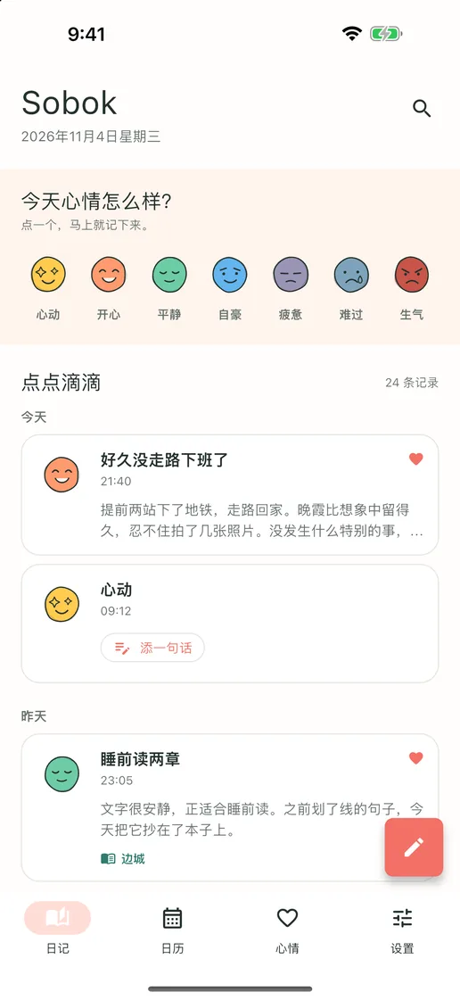
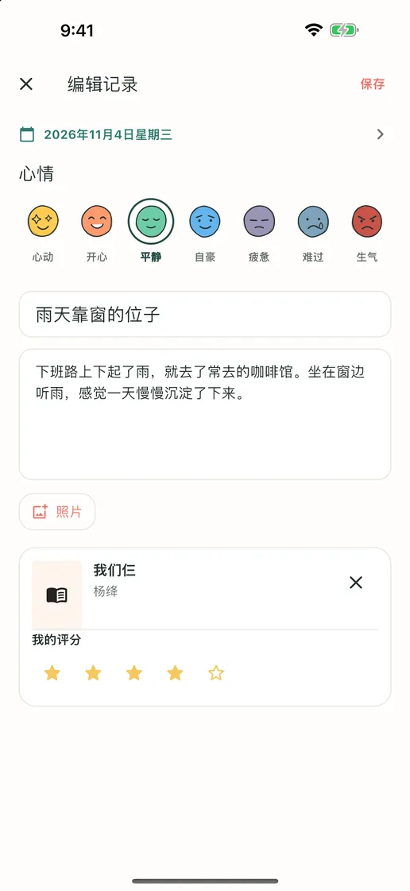
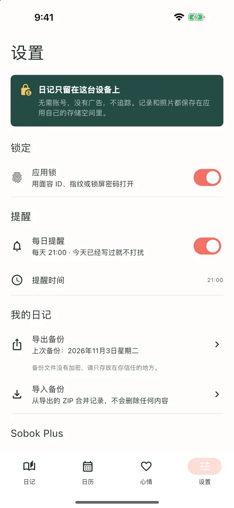
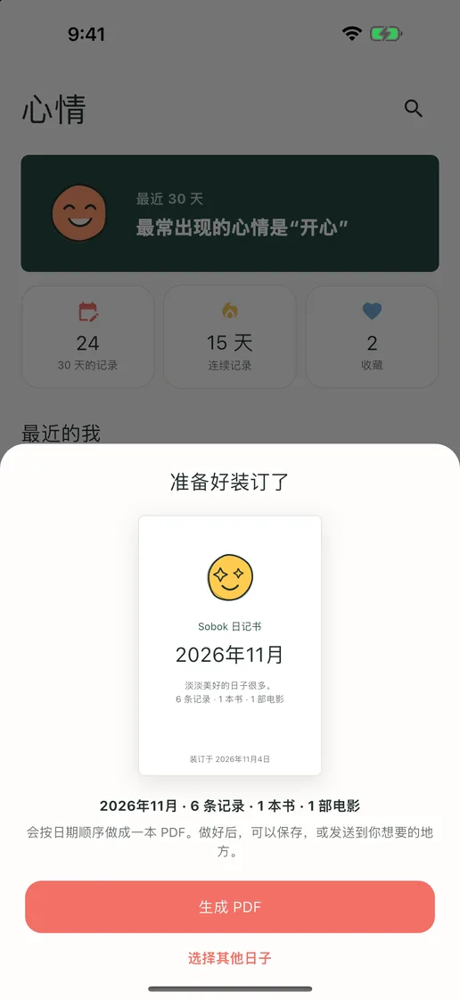
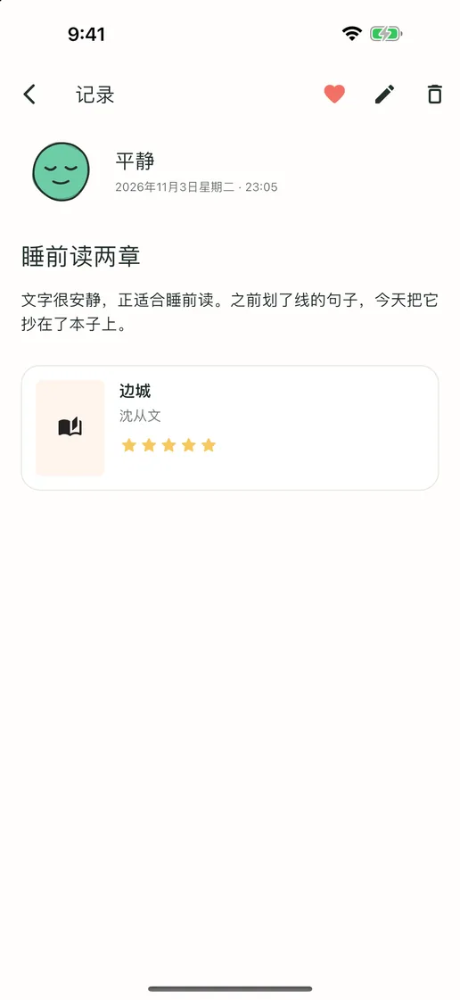
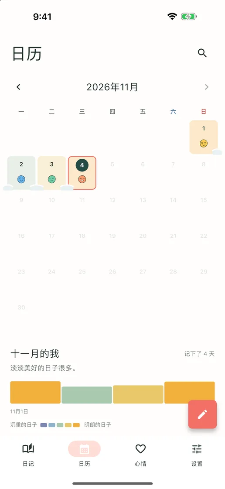
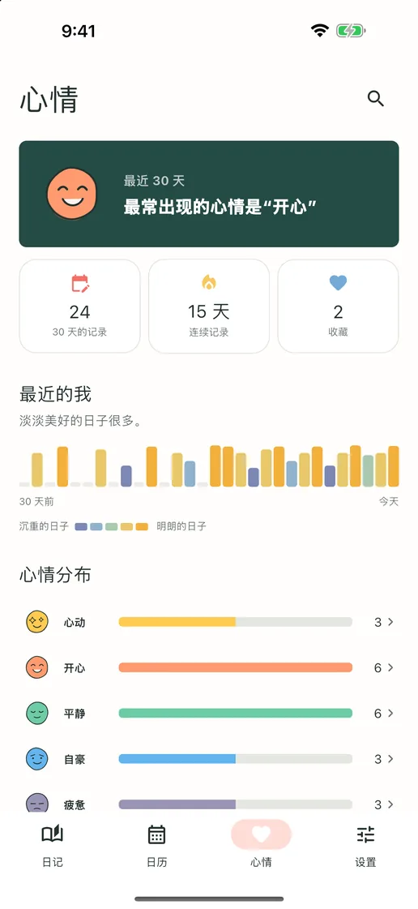

今天的心情，点一下就好
从七种心情表情中点一个，它就成为今天的记录。有话想说时，在同一条记录里添一句就好。
记录心情、随笔、读书和观影
无需账号，没有广告，也没有订阅。点一下心情就能留下今天；长篇文字、照片，连书和电影的感想都能写进同一条记录。一切都只存在你的手机里。
即将登陆 App Store 和 Google Play免费 · 含应用内购买 · iPhone 和 Android · English · Deutsch · Tiếng Việt · Español · Bahasa Indonesia · 日本語 · 简体中文 · 繁體中文 · ไทย · Português · Français · 한국어


想写多少就写多少
没什么想写的日子，点一下心情就能留下今天。想写的日子，标题、长篇文字、照片，以及对刚读完的书或刚看完的电影的感想，都能写进同一条记录。
从七种心情表情中点一个，它就成为今天的记录。有话想说时，在同一条记录里添一句就好。
标题、长篇文字、照片和评分——那天想写什么就加什么。可以搜索刚读完的书或刚看完的电影，也可以自己手动输入。
每写下一天，那天的心情就会落在日历上，连续记录的日子会像雪一样连成一片。哪几周过得好、哪几周比较辛苦，一眼就能看出来。
应用一览
“Sobok-sobok”是韩语里形容雪花静静堆积的声音——你的日子，也会在这里一天一天轻轻积攒起来。





无需注册，没有广告，也不追踪。日记只存储在你的设备上，所有记录和照片都能导出为 ZIP 文件，并在新设备上导入。记录、搜索、日历、应用锁和备份全部免费；只有把记录装订成 PDF 日记书的 Sobok Plus 需要一次性购买。